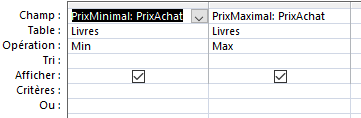
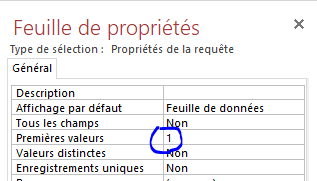

TP Bases de données Proposé Par Mohamed Anis MANI
TP Bases de données
On donne le schéma suivant de la base de données « Gestion_Livres » :
On demande de réaliser les requêtes de sélection suivantes :
Afficher la liste des livres (RefLivre, Titre) par ordre alphabétique.
Afficher la liste des livres (RefLivre, Titre, NbPages) par ordre décroissant du nombre de pages.
Afficher la liste des livres (RefLivre, Titre, DateEdition) du plus récent au plus vieux.
Afficher les auteurs (Nom, Pays) groupés par pays.
Afficher les noms des auteurs tunisiens par ordre alphabétique de leurs noms.
Afficher les noms des auteurs (Nom, Pays) d’un pays donné par ordre alphabétique de leurs noms.
Afficher les livres (RefLivre, Titre, NbPages) de moins de 100 pages par ordre décroissant du NbPages.
Afficher les livres (RefLivre, Titre, DateEdition) des livres édités en mois de Mars 2018.
Afficher les livres (RefLivre, Titre) des livres qui contiennent le mot « Win ».
Afficher le prix d’achat du livre (RefLivre, Titre, PrixAchat) ayant comme RefLivre 114.
Afficher la date d’édition (RefLivre, Titre, DateEdition) des livres qui commencent par le mot « Astuce » en ordre croissant de la Date d’édition.
Afficher les livres (RefLivre, Titre, NbPages) qui contiennent entre 200 et 500 pages.
Afficher les noms des auteurs de tous les livres (RefLivre, Titre, Nom) ordonnés par ordre alphabétique des titres des livres.
Afficher les noms des auteurs qui ont publié un livre au mois d’Avril 2018 (RefLivre, Titre, Nom, DateEdition).
Afficher les titres des livres (RefLivre, Titre, Nom) publiés par des écrivains de l’Egypte.
Afficher les titres des livres (RefLivre, Titre) qui ont une 2nde, afficher les titres des livres sans redondances.
Afficher les prix d’achats (RefLivre, Titre, PrixAchat) des livres publiés par des auteurs Libyéens sans redondances et par ordre croissant du prix.
Afficher les titres des livres (RefLivre, Titre) publiés par « Ayoub Bouchiba ».
Afficher le nombre de livres enregistrées dans la base.
Afficher le nombre de livres qui comptent moins de 200 pages.
Afficher le nombre de livres qui ont un prix d’achat compris entre 10DT et 20DT.
Afficher le prix maximal et le prix minimal des livres.
Afficher le titre du livre qui possède un nombre maximal de pages.
Afficher le nombre d’auteurs (RefLivre, Titre, NbAuteurs) de chaque livre.
Solutions
Afficher la liste des livres (RefLivre, Titre) par ordre alphabétique.
Afficher la liste des livres (RefLivre, Titre, NbPages) par ordre décroissant du nombre de pages.
Afficher la liste des livres (RefLivre, Titre, DateEdition) du plus récent au plus vieux.
Afficher les auteurs (Nom, Pays) groupés par pays.
Afficher les noms des auteurs tunisiens par ordre alphabétique de leurs noms.
Afficher les noms des auteurs (Nom, Pays) d’un pays donné par ordre alphabétique de leurs noms.
Afficher les livres (RefLivre, Titre, NbPages) de moins de 100 pages par ordre décroissant du NbPages.

Afficher les livres (RefLivre, Titre, DateEdition) des livres édités en mois de Mars 2018.
Afficher les livres (RefLivre, Titre) des livres qui contiennent le mot « Win ».
Afficher le prix d’achat du livre (RefLivre, Titre, PrixAchat) ayant comme RefLivre 114.
Afficher la date d’édition (RefLivre, Titre, DateEdition) des livres qui commencent par le mot « Astuce » en ordre croissant de la Date d’édition.
Afficher les livres (RefLivre, Titre, NbPages) qui contiennent entre 200 et 500 pages.
Afficher les noms des auteurs de tous les livres (RefLivre, Titre, Nom) ordonnés par ordre alphabétique des titres des livres.
Afficher les noms des auteurs qui ont publié un livre au mois d’Avril 2018 (RefLivre, Titre, Nom, DateEdition).

Afficher les titres des livres (RefLivre, Titre, Nom) publiés par des écrivains de l’Egypte.
Afficher les titres des livres (RefLivre, Titre) qui ont une seconde édition, afficher les titres des livres sans redondances.
Afficher les prix d’achats (RefLivre, Titre, PrixAchat) des livres publiés par des auteurs Libyéens sans redondances et par ordre croissant du prix.
Afficher les titres des livres (RefLivre, Titre) publiés par « Ayoub Bouchiba ».
Afficher le nombre de livres enregistrées dans la base.
Afficher le nombre de livres qui comptent moins de 200 pages.
Afficher le nombre de livres qui ont un prix d’achat compris entre 10DT et 20DT.
Afficher le prix maximal et le prix minimal des livres.

Afficher le titre du livre qui possède un nombre maximal de pages.

Afficher le nombre d’auteurs (RefLivre, Titre, NbAuteurs) de chaque livre.
3ème
Economie & gestion Page